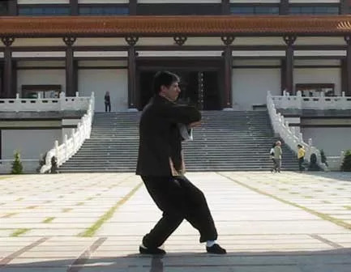

Kuen Toe (Forma de Punho)
Por Thomas Pinheiro
Kuen Toe significa forma de punho, uma sequência de movimentos com o corpo que definem uma rotina, uma forma. Para as artes marciais japonesas, é conhecida como kata. Para o sistema Wing Chun o kuen toe tem como intenção o aprendizado e manutenção das técnicas, treinando postura de pernas e braços, execução de movimentação contínua, respiração, concentração, elasticidade, e potência. Funciona como um livro guia para o praticante, que sozinho pode estudar revendo as técnicas ao realizar a forma.
O Wing Chun possue três formas executadas no ar: Siu Lim Tao, Chum Kiu, Bue Gee. Há outro kuen toe praticado em um aparelho de madeira denominado mook yan jong. Cada uma das três formas praticadas no ar possuem 108 técnicas e são divididas em seções.
Siu Lim Tao: a primeira forma a ser ensinada no Wing Chun, significa “pequena ideia”. Para o praticante o significado está em aprender os fundamentos essenciais do estilo, como a concentração, a economia, e continuidade de movimento, definir a estrutura da perna, e principalmente manter ombros e cotovelos soltos.
Chum Kiu: segunda forma a ser ensinada, significa “atravessar a ponte” ou “afundar a ponte”. Nesta forma o praticante desenvolve potência, deslocamento. A intenção passa a ser de confronto com mais de um oponente. Exige-se treino de resistência em relação à forte explosão aliada a velocidade de braços e pernas, utilizando-se de toda potência gerada pelo corpo em seus movimentos.
Bue Gee: terceira forma, significa “dedos que voam”, ainda hoje se mantém para escolas tradicionais como um kuen toe reservado apenas a membros da família. Aperfeiçoam-se movimentos de emergência, isto é, situações muito próximas que exigem rápido efeito, as técnicas aplicadas são muito curtas.
Mook Yan Jong: significa “boneco de madeira de treino”, no Wing Chun é praticada uma forma com este aparelho que tradicionalmente possue três braços e uma perna de madeira. A prática neste aparelho desenvolve um tipo de força de contato e deslocamento, além de aprimorar as técnicas desenvolvidas na formas anteriores.
Somam-se a estas quatro formas mais duas formas de armas conhecidas como “luk dim bune kwan” e "pa tzan do”. Hoje em dia é muito comum os praticantes falarem, “eu aprendi tal forma”, mas existe muita diferença entre decorar e aprender, as formas são para serem estudadas e leva-se tempo até compreender; não é algo apenas que se copia, caso contrário seria apenas uma dança. Muitos movimentos revelam com o passar dos anos intenções inicialmente desapercebidas.
É fácil atualmente encontrar as formas em livros e vídeos, sem falar em seminários de um dia onde se ensina a execução da forma; mas os detalhes são considerados como preciosidades e comumente não são explanados.